부산, 맞춤
추천일정
입니다.
단계별로 여행 계획을 세워보세요.
Day 1
Day 2
Day 3
1
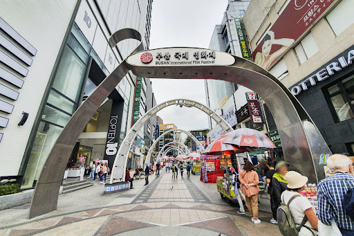
BIFF 광장
hotspot ·
부산광역시 중구 비프광장로 일대
부산국제영화제의 상징. 길거리 간식과 포토스팟이 많아요.
2
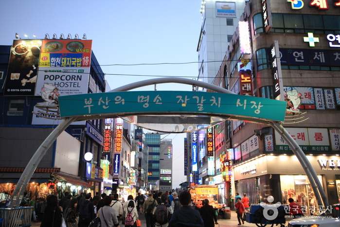
자갈치시장
food ·
부산광역시 중구 자갈치해안로 52
싱싱한 회와 해산물 한상! 실내 시장 2층 식당가 이용 추천.
3
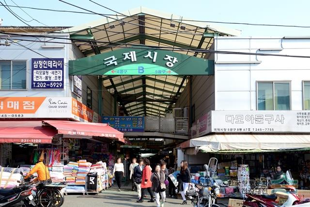
국제시장
shopping ·
부산광역시 중구 국제시장2길 일대
먹거리·소품 쇼핑 천국. 근처 부평깡통시장 야시장과 함께.
4
용두산공원 · 부산타워
view ·
부산광역시 중구 용두산길 37-55
남포동 전경과 부산항 야경을 한눈에.
5
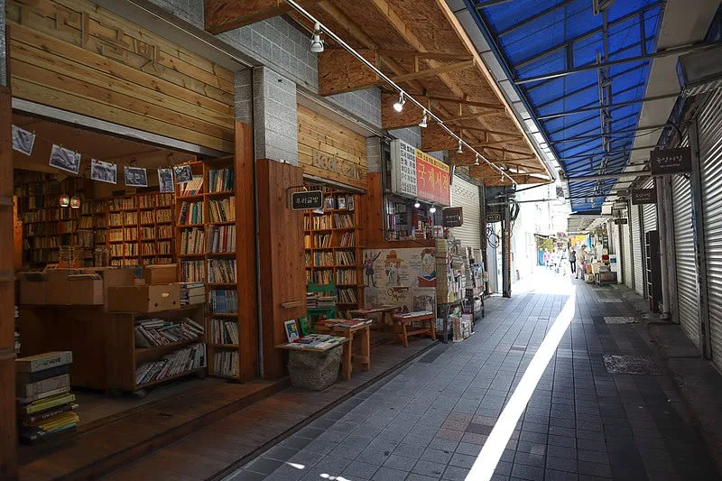
보수동 책방골목
culture ·
부산광역시 중구 보수동 책방골목길 일대
레트로 감성의 헌책방 거리. 카페와 함께 여유롭게 산책.
1
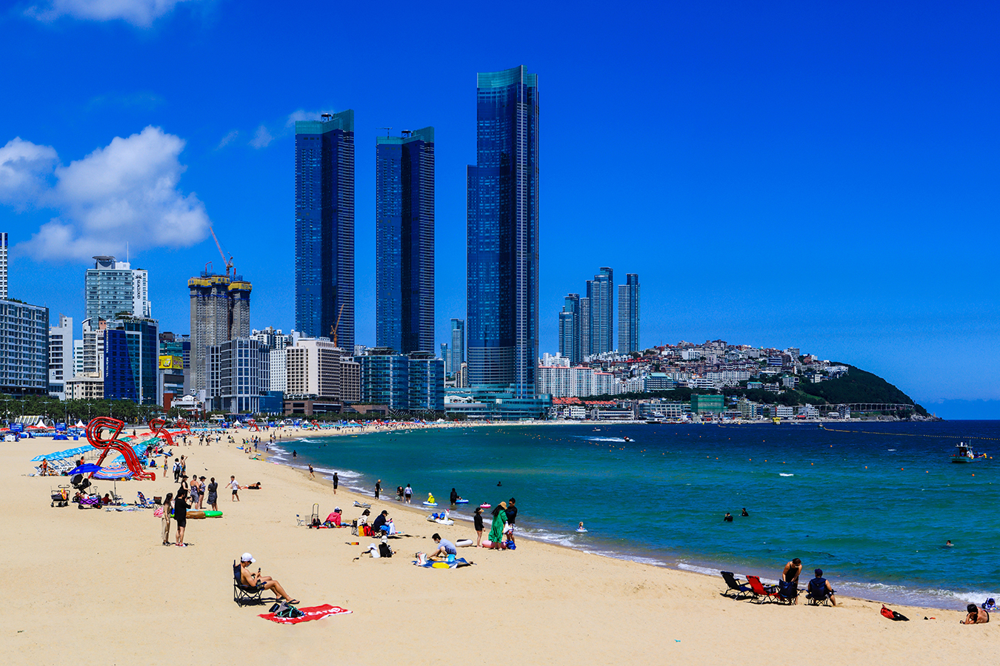
해운대해수욕장
beach ·
부산광역시 해운대구 해운대해변로 일대
부산 대표 바다. 오전 산책과 모래놀이터, 서핑 체험까지.
2
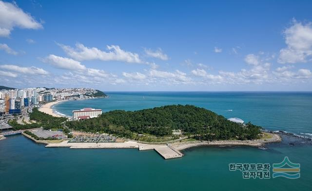
동백섬 · 누리마루 APEC 하우스
trail ·
부산광역시 해운대구 동백로 116
해안 산책로와 전망 포인트가 이어지는 힐링 코스.
3
더베이101
view ·
부산광역시 해운대구 동백로 52
마린시티 야경과 요트 선셋 포인트. 야간 방문 추천.
4
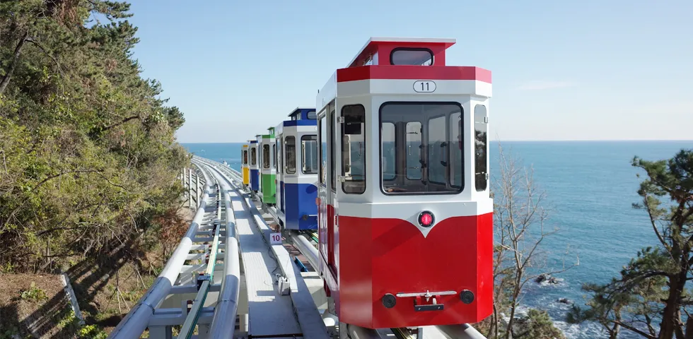
블루라인파크 미포정거장
ride ·
부산광역시 해운대구 달맞이길62번길 13
해변열차·스카이캡슐 타고 청사포/송정까지 시원하게.
5
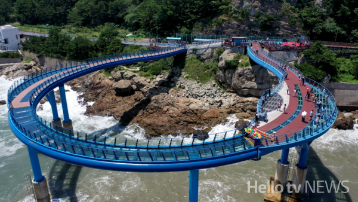
청사포 다릿돌전망대
view ·
부산광역시 해운대구 청사포로 167
유리데크 위 바다 산책. 카페 스트리트와 함께 즐겨요.
1
감천문화마을
culture ·
부산광역시 사하구 감내2로 203
형형색색 골목과 포토존. 스탬프 투어로 재미 더하기.
2
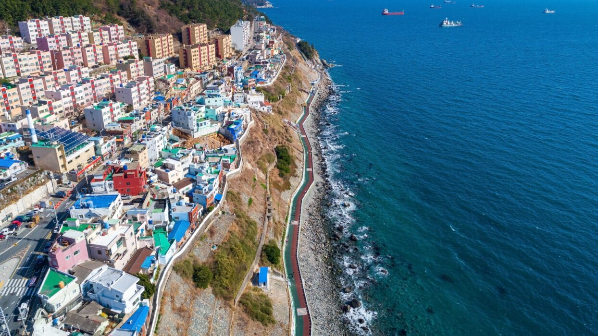
흰여울문화마을
walk ·
부산광역시 영도구 흰여울길 245
영도 바다 절벽 위 카페·전망 스폿. 파도 소리와 함께.
3
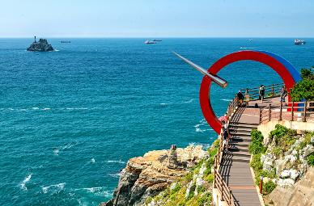
태종대
nature ·
부산광역시 영도구 전망로 24
다누비열차로 등대·전망대 순환. 일몰 명소로 유명.
4
송도해상케이블카 & 구름다리
ride ·
부산광역시 서구 송도해변로 171
바다 위를 가르는 케이블카와 유리다리 산책 코스.
5
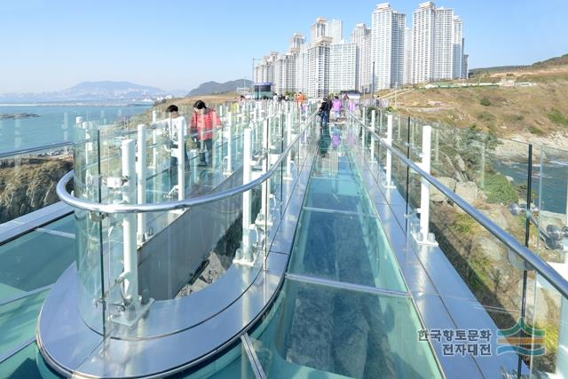
오륙도 스카이워크
view ·
부산광역시 남구 오륙도로 137
유리데크 위 아찔한 바다 전망. 근처 용호동 카페거리도 좋아요.
내 일정으로 담기